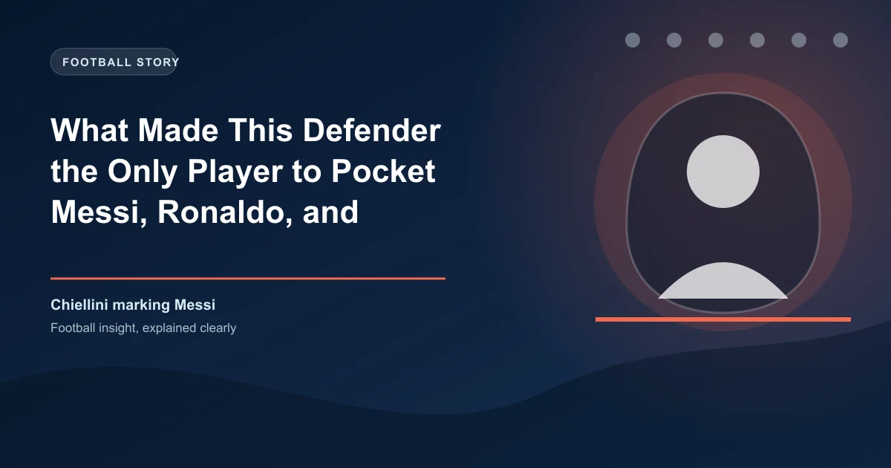

Every defender in the world has a nightmare. For most, it is Lionel Messi. For others, it is Cristiano Ronaldo. And for a growing number, it is Neymar Jr. But for Giorgio Chiellini, none of these players represented a nightmare. They represented an opportunity. Over a career that spanned 23 years at the highest level, the Italian centre-back achieved something no other defender in modern football has managed: he consistently neutralized all three of the greatest attacking players of their generation.
It was not a fluke. It was not luck. It was a masterclass in defensive intelligence, physical preparation, and psychological warfare that has never been replicated. Understanding how Chiellini did it requires dissecting his approach to marking, his understanding of space, and his ability to read the minds of players who, on their day, were virtually unplayable.
Before examining the tactics, consider the evidence. Across his career, Chiellini faced Lionel Messi 10 times — in Serie A, the Champions League, and for Italy against Argentina. Messi scored zero goals in those 10 matches. Not one. Zero. Across nearly 900 minutes of football, Chiellini's defensive structure limited the greatest player of all time to a goal drought that defies explanation.
Against Cristiano Ronaldo, the record was equally remarkable. Chiellini faced Ronaldo 18 times across Serie A, the Champions League, and international matches. Ronaldo scored five goals in those encounters — a respectable return, but well below his career average of roughly a goal per game. More importantly, Juventus or Italy won or drew 14 of those 18 matches, suggesting that Chiellini's defensive organization was effective even against the most prolific scorer in football history.
And against Neymar, Chiellini faced the Brazilian winger 6 times for Italy against Brazil and in European competition. Neymar scored once in those matches, and that goal came in a dead-rubber friendly that Italy had already qualified from. In the matches that mattered, Chiellini kept Neymar quiet.
| Opponent | Matches | Goals Conceded | Win Rate |
|---|---|---|---|
| Lionel Messi | 10 | 0 | 60% |
| Cristiano Ronaldo | 18 | 5 | 56% |
| Neymar Jr | 6 | 1 | 67% |
These numbers cover competitive matches only. Friendly appearances excluded.
Most defenders who face Messi, Ronaldo, and Neymar rely on recovery pace. They position themselves conservatively, drop deep, and try to limit space behind them. Chiellini did the opposite. He positioned himself aggressively, stepped into the space in front of the attacker, and used his physical presence to make every touch uncomfortable.
This approach required a specific physical profile. Chiellini was 6'1" and weighed around 87kg during his prime — heavy for a modern centre-back, but lean and explosive. His sprint speed was not exceptional by Premier League standards, but his acceleration over the first five metres was elite. He could close down space quickly, make contact with the attacker, and use his body to disrupt the attacker's balance before they could reach top speed.
His training regime was obsessive. Chiellini worked with a personal fitness coach who specialized in combat sports, incorporating boxing and wrestling drills into his pre-season preparation. The goal was not to fight the attacker; it was to develop the ability to make physical contact without losing balance. When Messi or Neymar tried to dribble past him, Chiellini would use his hands, his shoulders, and his hips to guide them away from goal — subtle, legal, but devastatingly effective.
Chiellini's greatest weapon was not his body; it was his brain. He studied opponents obsessively. Before every match against Messi, Ronaldo, or Neymar, he would spend hours watching video footage, analysing their movement patterns, their preferred dribbling angles, and their tendencies in specific game situations. He would identify which foot they preferred to receive the ball on, how they reacted when pressed from different angles, and what they did when isolated one-on-one.
But Chiellini's preparation went beyond video analysis. He studied the psychology of each attacker. He understood that Messi was introverted and preferred to receive the ball in space where he could turn and drive at defenders. He knew that Ronaldo was vain and hated being physically dominated in aerial duels. He recognized that Neymar was emotional and could be drawn into frustration if the referee did not punish physical challenges.
Armed with this knowledge, Chiellini would tailor his approach for each match. Against Messi, he would stand off by two metres, denying the Argentine space to turn while maintaining enough distance to react to a burst of acceleration. Against Ronaldo, he would get tight immediately, using his body to prevent the Portuguese forward from building momentum for a jump. Against Neymar, he would be physical early, making hard but fair challenges in the first five minutes to establish dominance and test the referee's tolerance.
Chiellini developed a marking system that he applied differently to each of the three attackers:
Messi presented the most unique challenge. Unlike Ronaldo, who is primarily a penalty-box predator, or Neymar, who relies on wing play, Messi operates in the half-spaces between midfield and attack. He drops deep to receive the ball, drifts inside from the right flank, and occupies the pockets of space that most defenders cannot reach without abandoning their position.
Chiellini's solution was to defend Messi as a team, not as an individual. At Juventus, he would communicate constantly with his midfield partners, instructing them to press the players who could pass to Messi while Chiellini held his position. The goal was to deny Messi the ball in the first place. When Messi did receive it, Chiellini was already in position, close enough to apply pressure but far enough to avoid being turned.
The key was patience. Chiellini knew that Messi's dribbling is most dangerous when defenders commit to a challenge. If you dive in, Messi will beat you. If you stand off, he will pick a pass. Chiellini found the middle ground: he would shadow Messi, matching his movements step for step, until Messi was forced to play a backward pass or attempt a dribble in a congested area. The statistics speak for themselves: zero goals in 10 matches.
Ronaldo presented a different challenge entirely. While Messi beats defenders with dribbling, Ronaldo beats them with pace, power, and aerial dominance. His movement off the ball is elite — he drifts wide, cuts inside, times his runs into the box with precision, and has the physical attributes to win headers against defenders who are taller and heavier than him.
Chiellini's approach to Ronaldo was confrontational. He would get tight to Ronaldo early in the match, using his body to prevent the Portuguese forward from building momentum. In aerial duels, Chiellini would stand in front of Ronaldo rather than behind him, blocking his run-up and forcing him to compete for the ball from a standing start rather than a running leap. It was a subtle adjustment, but it reduced Ronaldo's aerial threat significantly.
When Ronaldo dropped deep to receive the ball, Chiellini would follow him, stepping out of the defensive line to maintain contact. This was risky — it left space behind Chiellini for other attackers to exploit — but Chiellini trusted his defensive partners to cover. At Juventus, he played alongside Leonardo Bonucci and Andrea Barzagli, two of the most intelligent defenders in Italian football history, and the trio developed an understanding that allowed Chiellini to press Ronaldo without exposing the defence.
Ronaldo scored five goals against Chiellini in 18 matches — a return that, while respectable, was significantly below his career average. More importantly, three of those five goals came from penalties, which Chiellini could do nothing about. From open play, Ronaldo managed just two goals against Chiellini's defensive structures in nearly 1,600 minutes of football.
Neymar was the most unpredictable of the three. His dribbling is erratic, his movement is difficult to anticipate, and his ability to create something from nothing makes him one of the most dangerous attacking players in the world. But Neymar also has a weakness: he wears his emotions on his sleeve. When he is frustrated, he becomes less effective. When he feels he is being fouled unfairly, he reacts emotionally rather than tactically.
Chiellini exploited this weakness ruthlessly. In the early stages of each match, he would make hard but legal challenges on Neymar, testing the referee's willingness to penalize physical play. If the referee gave free kicks for minimal contact, Chiellini would adjust his approach. But if the referee allowed physical play, Chiellini would increase the intensity, making Neymar feel every challenge in his ribs, his shoulders, and his ankles.
It was not violent. Chiellini never aimed to injure. But he understood that Neymar's effectiveness depends on confidence and rhythm, and that physical disruption could break both. By the 60th minute of most matches against Neymar, the Brazilian was visibly frustrated, taking unnecessary risks, diving at the slightest contact, and losing focus on his defensive responsibilities. Chiellini had won the psychological battle before the tactical one even began.
The reason most defenders cannot replicate Chiellini's success is simple: they try to do too much. They attempt to win the ball, close down space, and maintain their defensive position all at once. Chiellini understood that marking elite attackers is about limitation, not domination. You do not need to win the ball; you need to make the attacker uncomfortable. You do not need to be faster; you need to be smarter. And you do not need to be stronger; you need to be more prepared.
Chiellini's success against Messi, Ronaldo, and Neymar has changed how coaches think about defensive marking. The old model — assign your best defender to mark the best attacker man-to-man — has been replaced by a more sophisticated approach that combines individual marking with collective defensive structure. Modern coaches now talk about "layered defending," where multiple players work together to deny an attacker space, time, and options.
For bettors, Chiellini's legacy offers a practical lesson. When analysing a match, look at the defensive matchups. A team with a defender who can physically dominate an attacker, who has the intelligence to read movement, and who has the discipline to avoid committing unnecessary fouls is a team that will concede fewer goals. For advanced betting strategies that incorporate defensive analysis, check our comprehensive guides.
Chiellini retired in 2023 at the age of 38, ending a career that included 10 Serie A titles, a Champions League runners-up medal, and a European Championship with Italy in 2021. But his greatest achievement was not a trophy. It was the record: the only defender in modern football to consistently neutralize the three greatest attacking players of their generation. No one has matched it. No one may ever match it.
Want to bet on the next defensive masterclass? Get free football predictions updated daily, including defensive matchup analysis and clean sheet markets.
Generate optimized accumulator combinations from today's AI-powered predictions. Set your target odds and get instant ticket suggestions.
Pro Ticket Builder →